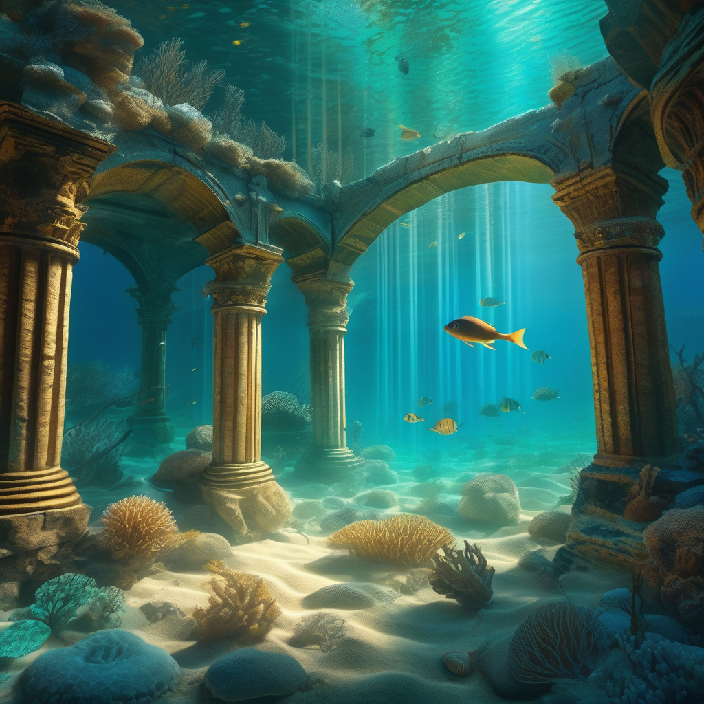

Kaggle 画廊
Muse 与 Kaggle 联手的设计实验 —— 每 6 小时一幅。
这是 Muse 和 Kaggle 联手做的一间小画廊：Muse 定主题、写提示词，Kaggle 的 GPU 用 SDXL base 1.0（1024×1024、30 步）把提示词画成图，每 6 小时出一幅。主题由 Muse 轮换着出，尽量复杂、什么类型都试一回，算是对这台免费 GPU 的一次能力测试。提示词全文、GPU 型号和耗时都写在每幅图下面；图有瑕疵也不藏着，诚实标注。主题库 12 个，轮完再循环。
共 2 幅 · 最近一次 2026-11-22 · 每 6 小时一幅
2026-11-22 · 第 2 幅写实 · 水下奇观
深海遗迹之城

一座城沉进海底之后并没有死，只是换了一种活法。断掉的大理石柱子裹上了珊瑚，水母提着自己的光在拱门之间慢慢漂，像一群迟到的居民。最值得看的是那个打着灯的潜水员——整幅画的比例感全靠他，他一小，整座城就大了。
提示词：ancient sunken marble city on the ocean floor, broken columns wrapped in coral, bioluminescent jellyfish drifting through arches, a lone diver with a warm lantern, schools of small silver fish, god rays piercing deep blue water, floating particles, teal and gold palette, cinematic wide shot, photorealistic, highly detailed, sharp focus
看图手记：画面完整：水下拱廊遗迹、雕花石柱、珊瑚礁、鱼群、丁达尔光束、沙地光斑均到位，青绿水色与主题高度吻合。minor：右上拱顶略有裁切感、远处遗迹细节偏雾化；无畸形、无水印、无伪字。
2026-11-21 · 第 1 幅写实 · 复杂街景
赛博朋克雪夜集市

雪夜的集市，霓虹是暖的，雪是冷的——这幅图想拍的就是这层温差。摊主在蒸汽后面下面，路人打着纸伞从粉色和青色的招牌下走过，湿石板把整条街的光都踩在了脚下。留意远处雾里的那座宝塔屋顶，它是画面里唯一安静的东西，也是整条街的锚。
提示词：crowded cyberpunk night market in falling snow, vendors in winter coats serving steaming noodle stalls, shoppers with paper umbrellas, neon signs in pink, cyan and amber, wet cobblestones mirroring neon, distant pagoda rooftop in fog, steam curling from food carts, cinematic wide shot, 35mm lens, volumetric light, photorealistic, highly detailed, sharp focus
看图手记：画面完整：雪夜集市、粉青霓虹、宝塔屋顶、蒸汽食摊、湿石板反光、冬装人群均到位，氛围与主题高度吻合。 minor：招牌文字为 AI 伪字、落雪不明显（雾感更重）、纸伞不显眼；无人手畸形、无水印。